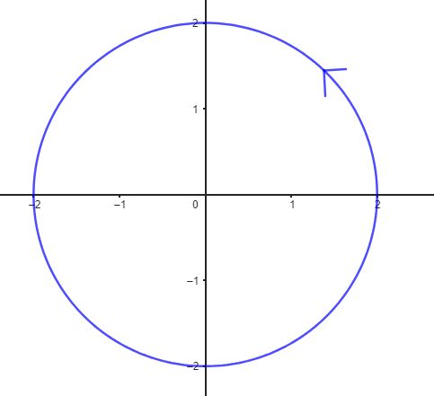

O terceiro e último bloco de curvas no plano que deveríamos conhecer são as cônicas, isto é, circunferências, elipses, hipérboles e parábolas. Já vimos na seção anterior que a parábola pode ser enxergada como o gráfico de uma função quadrática e assim a parametrizaremos como tal. Já as outras cônicas não são gráfico de uma função e precisam de uma atenção individualizada. Vamos lá?
CURVAS PARAMÉTRICAS
Parametrização de cônicas
Parametrização de uma circunferência

A equação cartesiana da circunferência de centro a origem e raio 2 é \(\quad x^2+y^2=4,\quad \) certo? Acesse esse vídeo caso não estiver tão certo :-)
Qual será, então, suas equações paramétricas? Vamos lá!
Sabemos por trigonometria que \(\quad \cos(t)^2+\operatorname{sen}(t)^2=1\quad \) para todo t real. Não é?
Então, fazendo certinho a conta, temos que \(\quad (2\cos(t))^2+ (2\operatorname{sen}(t))^2=4.\quad \) Pronto! Já sabemos quem é x e quem é y!
Uma parametrização da circunferência de centro a origem e raio 2 é
\begin{cases} x(t) &= 2\cos(t) \\ y(t) &= 2\operatorname{sen}(t)\end{cases} \quad ,\,t\in [0,2\pi]
Acredite, sim.... Faça a conta e confira. Vai ver que os pontos dessa curva verificam que \(\quad x^2+y^2=4. \)
Curiosidade: Pergunte seu/sua professor/a o que significa a setinha que aparece na imagem do segmento. Com certeza ele/a vai falar de orientação de curvas!
Observe que tanto o cosseno como o seno são 2pi periódicos. Daí, colocando t entre 0 e 2pi, daremos apenas uma volta na circunferência. Quantas voltas daríamos se colocarmos t entre 0 e 4pi?
A equação (cartesiana) da circunferência de centro (-1,7) e raio 3 é
(x+1)^2+(y-7)^2=9
Portanto, fazendo \(\quad x+1=3\cos(t)\quad \) e \(\quad y-7=3\operatorname{sen}(t),\quad \) a equação é satisfeita.
Sendo assim, uma equação paramétrica da circunferência de centro (-1,7) e raio 3 é
\begin{cases} x(t) = -1+3\cos(t) \\ y(t)= 7+3\operatorname{sen}(t)\end{cases} \;,\,t\in [0,2\pi]
Curiosidade: Se esboçarmos a curva, para onde iria a setinha? E se trocar o seno pelo cosseno e vice-versa nas equações paramétricas?
Entre em contato com os monitores se ainda estiveres com dúvidas.
Força!
(x+1)^2+(x-7)^2=9cos(t)^2+9sen(t)^2=9
Parametrização de uma elipse
A equação cartesiana da elipse de centro a origem e semi-eixos a=3 e b=2 é \(\quad \dfrac{x^2}{9}+\dfrac{y^2}{4}=1,\quad \) certo? Acesse esse vídeo e esse outro caso não estiver tão certo :-)
Qual será, então, suas equações paramétricas? Vamos lá!
Como \(\quad \cos(t)^2+\operatorname{sen}(t)^2=1\quad \) para todo t real, então
\(\quad \dfrac{(3\cos(t))^2}{9}+ \dfrac{(2\operatorname{sen}(t))^2}{4}=1,\quad \) não é?
Pronto! Já sabemos quem é x e quem é y!
Uma parametrização da elipse de centro a origem e semi-eixos a=3 e b=2 é
\begin{cases} x(t) = 3\cos(t) \\ y(t) = 2\operatorname{sen}(t)\end{cases} \; ,\,t\in [0,2\pi]
Acredite, sim.... Faça a conta e confira. Vai ver que os pontos dessa curva verificam que \(\quad \dfrac{x^2}{9}+\dfrac{y^2}{4}=1,\quad \)
Curiosidade: Pergunte seu/sua professor/a o que significa a setinha que aparece na imagem do segmento. Com certeza ele/a vai falar de orientação de curvas!
A equação (cartesiana) da elipse de centro (2,-1) e semi-eixos a=5 e b=3 é \(\quad \dfrac{(x-2)^2}{25}+\dfrac{(y+1)^2}{9}=1.\quad \)
Logo, fazendo \(\quad x-2=5\cos(t)\quad \) e \(\quad y+1=3\operatorname{sen}(t),\quad \) a equação é satisfeita.
Donde, uma equação paramétrica da elipse de centro (2,-1) e semi-eixos a=5 e b=3 é
\begin{cases} x(t) &=2+5\cos(t) \\ y(t) &=-1+3\operatorname{sen}(t)\end{cases} \quad ,\,t\in [0,2\pi]
Curiosidade: Se esboçarmos a curva, para onde iria a setinha? E se trocar o seno pelo cosseno e viceversa nas equações paramétricas?
Legal, né?
Entre em contato com os monitores se ainda estiveres com dúvidas.
Força!
(x-1)^2/25+(x+1)^2/9=cos(t)^2+sen(t)^2=1
Parametrização de uma hipérbole
A hipérbole, a diferença da circunferência e a elipse, possui duas parametrizações padrão. A primeira e mais simples de se lembrar (por analogia às outras cônicas) envolve funções hiperbólicas. Já a segunda envolve funções trigonométricas.
Daremos as duas parametrizações da hipérbole de centro a origem, focos sobre o eixo horizontal e semi-eixos a=4 e b=3. A equação cartesiana dessa hipérbole é \(\quad \dfrac{x^2}{4}-\dfrac{y^2}{9}=1,\quad \) certo? Acesse esse vídeo e esse outro caso não estiver tão certo :-)
-
Agora vamos com a parametrização por funções hiperbólicas!! Força!!
Primeiro de tudo, vamos desmistificar as funções cosseno e seno hiperbólicos. Relaxa!! Não são nada do outro mundo, viu? São apenas somas de funções exponenciais!! Respire fundo e observe:
\cosh(bt)=\dfrac{e^{bt}+e^{-bt}}{2}, \quad \operatorname{senh}(bt)=\dfrac{e^{bt}-e^{-bt}}{2}, \quad t\in \mathbb{R}
Viu como não é tão complicado?
Agora, a relação entre o cosseno e o seno hiperbólicos é um pouco diferente às das funções trigonométricas: \(\quad\cosh^2(t)-\operatorname{senh}^2(t)=1, \; \text{para todo}\; t\in \mathbb{R}.\quad \) Pode fazer a conta! Lembre que é só lidar com exponenciais!!
Bom, uma vez que já perdemos o medo dessas funções hiperbólicas, podemos parametrizar a hipérbole igualzinho a como foi feito com a elipse!
Como \(\quad \cosh^2(t)-\operatorname{senh}^2(t)=1,\quad \) para todo t nos reais, então
\(\quad \dfrac{(2\cosh(t))^2}{4}- \dfrac{(3\operatorname{sen}(t))^2}{4}=1,\quad \) não é?
Pronto! Já sabemos quem é x e quem é y!
Uma parametrização da hipérbole de centro a origem, focos sobre o eixo horizontal, eixo real de medida 4 e eixo imaginário de medida 6 é
\begin{cases} x(t) &= \pm 2\cosh(t) \\ y(t) &= 3\operatorname{senh}(t)\end{cases} \quad ,\,t\in \mathbb{R}
Acredite, sim.... Faça a conta e confira. Vai ver que os pontos dessa curva verificam que \(\quad \dfrac{x^2}{4}-\dfrac{y^2}{9}=1,\quad \)
Atenção! O \(\quad \pm \quad \) que aparece na parametrização não é nada demais... Não se espante. É devido a que o \(\quad \cosh(t)\quad \) é sempre positivo. Assim \(\quad +\cos(t)\quad \) dá o ramo positivo da hipérbole e \(\quad -\cosh(t)\quad \) descreve o ramo negativo. Viu como não era para tanto? Acredite mais em você!! Pode conferir certinho essa propriedade esboçando as curvas no Geogebra. Deve esboçar por serparado, primeiro com + e depois com -, ta? Força!
-
Primeiro de tudo, vamos manipular um pouco a equação \(\quad\cos^2(t)+\operatorname{sen}^2(t)=1. \quad \)
Com efeito, se dividimos a equação trigonométrica toda por \(\; \cos^2(t), \; \) obtemos que \(\quad 1+\tan^2(t)=\sec^2(t). \quad \) Ou, equivalentemante, \(\quad \sec^2(t)-\tan^2(t)=1, \; \) para todo t onde não se anula o cosseno!! Porque, caso contrário, estaríamos dividindo por zero. Esbemos que não é possível, não é? Bom, aqui é onde está a pegadinha desta parametrização!
Se não quisermos saber nada do intervalo já poderíamos dar a parametrização como fizemos com a elipse, pois \(\quad \dfrac{(2\sec(t))^2}{4}- \dfrac{(3\tan(t))^2}{4}=1,\quad \) não é?
Daí, \(\quad x(t)= 2\sec(t)\; \) e \(\; y(t)= 3\tan(t).\quad \)Agora somente falta ver o intervalo! Bora?
Assim como acontecia com o \(\; \cosh(t),\; \) a \(\; sec(t)\; \) também muda de sinal. Sendo ela possitiva em \(\; (-\dfrac{\pi}{2},\dfrac{\pi}{2})\; \) e negativa em \(\; (\dfrac{\pi}{2},\dfrac{3\pi}{2})\; \)
Então já está o pacote fechado! Uma parametrização da hipérbole de centro a origem, focos sobre o eixo horizontal, eixo real de medida 4 e eixo imaginário de medida 6 é
\begin{cases} x(t) &= 2\sec(t) \\ y(t) &= 3\tan(t)\end{cases} \quad ,\,t\in (-\dfrac{\pi}{2},\dfrac{\pi}{2})\cup(\dfrac{\pi}{2},\dfrac{3\pi}{2})
Acredite, sim.... Faça a conta e confira. Vai ver que os pontos dessa curva verificam que \(\quad \dfrac{x^2}{4}-\dfrac{y^2}{9}=1,\quad \)
Atenção! O intervalo \(\; (-\dfrac{\pi}{2},\dfrac{\pi}{2}) \; \) se corresponde com o ramo positivo da hipérbole (já que x>0). Já o intervalo \(\; (\dfrac{\pi}{2},\dfrac{3\pi}{2}) \; \) se corresponde com o ramo negativo da hipérbole (já que x< 0). Pode conferir certinho essa propriedade esboçando as curvas no Geogebra. Lembre que deve esboçar os ramos por serparado, ta? Primeiro um intervalo e depois o outro. Força!
Curiosidade: Pergunte seu/sua professor/a o que significa a setinha que aparece na imagem do segmento. Com certeza ele/a vai falar de orientação de curvas!
Tente esboçar a circunferência fazendo t variar entre 0 e pi. A que não é a mesma curva? O que? Que você acha isso frescura? Tudo bem... Imagine que somente percorrendo a circunferência toda você receberia um celular de brinde. Não gostaria ficar na metade, certo? Então veja como é de importante o intervalo em uma parametrização!
A equação (cartesiana) da hipérbole de centro a (-4,-11), focos sobre o eixo horizontal e semi-eixos a=5 e b=4 é \(\quad \dfrac{(x+4)^2}{25}+\dfrac{(y+11)^2}{16}=1.\quad \)
Logo, fazendo \(\quad x+4=5\cosh(t)\quad \) e \(\quad y+11=4\operatorname{senh}(t),\quad \) a equação é satisfeita.
Daí, uma equação paramétrica da hipérbole de centro a (-4,-11), focos sobre o eixo horizontal e semi-eixos a=5 e b=4 é
\begin{cases} x(t) &=-4\pm 5\cosh(t) \\ y(t) &=-11+4\operatorname{senh}(t)\end{cases} \quad ,\,t\in \mathbb{R}
Uma outra equação paramétrica da hipérbole de centro a (-4,-11), focos sobre o eixo horizontal e semi-eixos a=5 e b=4 seria
\begin{cases} x(t) &=-4+ 5\sec(t) \\ y(t) &=-11+4\tan(t)\end{cases} \quad ,\,t\in (-\dfrac{\pi}{2},\dfrac{\pi}{2})\cup(\dfrac{\pi}{2},\dfrac{3\pi}{2})
Curiosidade: Se esboçarmos a curva, para onde iria a setinha? E se trocar o seno hiperbólico pelo cosseno hiperbólico e viceversa nas equações paramétricas? Pensa antes de falar... que tem pegadinha!
Legal, né?
Entre em contato com os monitores se ainda estiveres com dúvidas.
Força!
(x+4)^2/25-(x+11)^2/16=cosh(t)^2-senh(t)^2=1
Brinque com as cônicas!
Fique a vontade de mexer nos valores a e b em cada cônica. O applet devolverá a parametrização.
A que se correspondem os valores a e b em cada cônica?
Se você mexer no tempo t, o pontinho P irá percorrer toda a cônica. Tente relacionar o tempo t com os pontos da cônica dados pela parametrização!
Para não poluir o applet, selecione apenas uma cônica de cada vez.
https://www.geogebra.org/m/sbe4gtg7 (Nova janela)
Se faça as seguintes perguntas para cada curva:
- Fixe um ponto qualquer Q da cônica. Em qual instante é atingido esse ponto?
- Fixe um instante \(t=t_0\). Por qual ponto passa a cônica nesse instante
Comente com seus colegas!
Entre em contato com os monitores em caso de dúvidas.
Força!